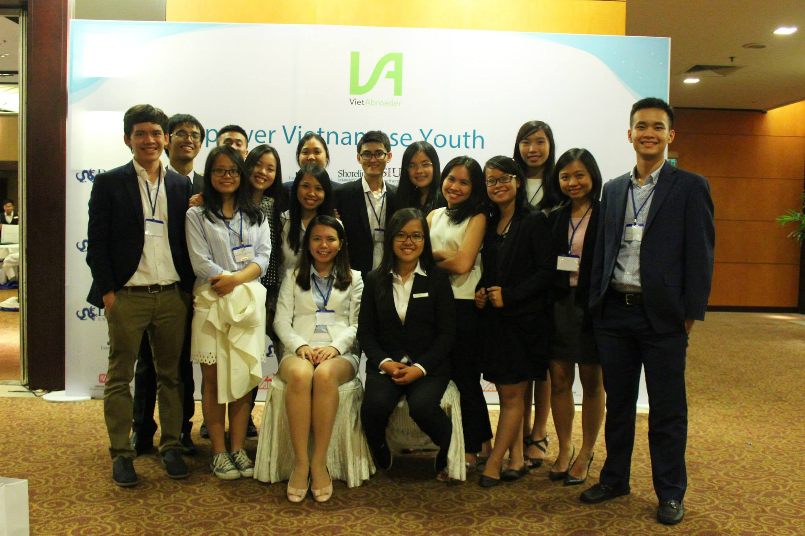
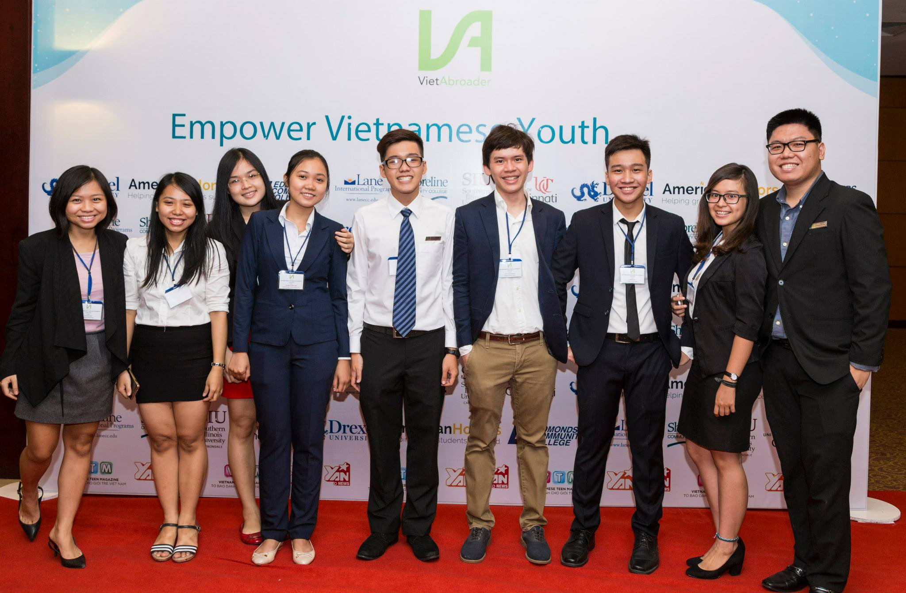

Working Experiences
Web Programmer
Web Content Bureau, Luther College,Decorah, IA
September 2016-Present
- Developing and maintaining the font end functionality of the website
- Update content of Luther’s website and its children pages
- Fix mistakes and construct the website structure
LIS Help Desk
ITS Department, Luther College,Decorah, IA
January 2016-Present
- Provide help desk support for Luther's students, staffs, and faculty members
- Solve problem that related to software, hardware, and connections of devices
- Document all issues and generate report with the details solutions for each problem
Mathematics Professor Student Assistant
Mathematics Department, Luther College, Decorah, IA
September 2015- Present
- Fix and grade student's homework
- Evaluate the efficiency of student's understanding of the lectures and material
- Manage time effectively to return student's papers before their next class period
Developmental/Annual Giving Office Assistant
Development Office, Luther College, Decorah, IA
January 2015-January 2016
- Update and link document to the Database of Luther's Alumni
- Connect old information files of the office with the Database
- Assist in conducting events
- Maintaining contact with Alumni by phone or email

